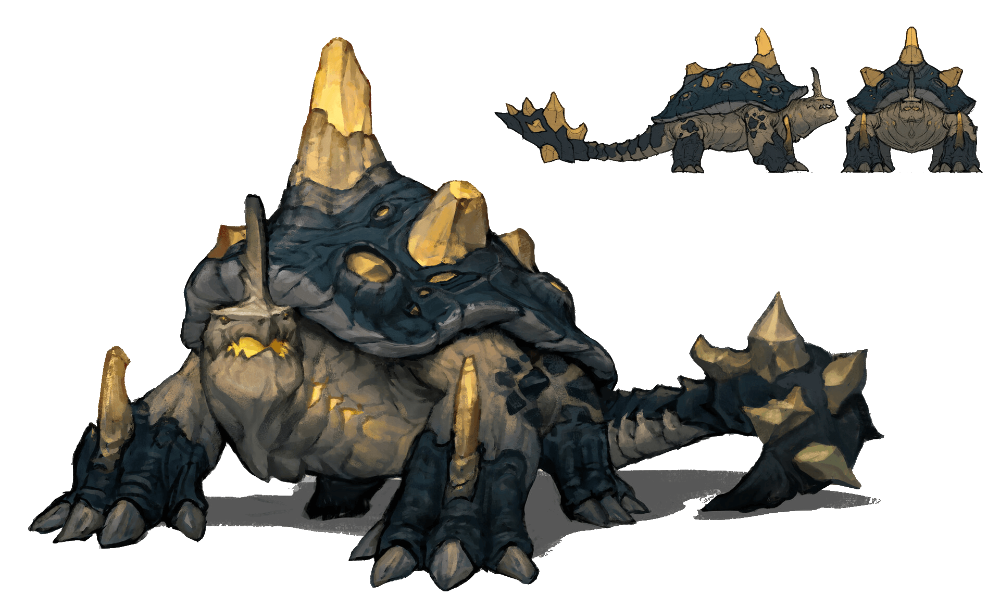

Scarlet Horizons
Tortaqua

• No. Enc: 1
• Alignment: Chaotic or Neutral
• Movement: 20'
• Armor Class: 4 (unarmored)
• Hit Dice: 6 (or by player-character level)
• BAB: +6 or by PC class/level
• Attacks: 2 or 1
• Damage: tail-lash 2d4 (exploding) & bite (1d4), or Trample 3d4 (exploding)
• Special Defenses: Resistance to cold-based damage
• Special Abilities: breathe water
• Save: F6, or by PC class/level
• Morale: 10
• Hoard: 35% chance per 2 full HD of 1d4 magic items
Experience Yielded: 350 per every two full HD
Turtaqua are hatched. When they emerge from the egg, they weigh sixty to seventy-five pounds and are size Small, have 1+4 HD, and a movement rate of 10'. Turtaqua reach adolescence in three years, at which time they weigh 175 to 225 pounds, are size Medium, have 5+4 HD, and have movement 15'. Adulthood is reached at five years, at which time Turtaqua are Large creatures weighing 400 to 500 pounds, with a movement rate of 20'.